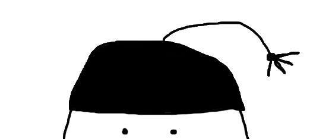

Welcome to Headfooting.com
Or for the scholarly ventured visitor: Cephalopod.com - the world's largest collection of headfooting porn.
Headfooting.com started as an experiment searching for an answer to the question we've all asked at some point:
Can I draw something that will get other people aroused?